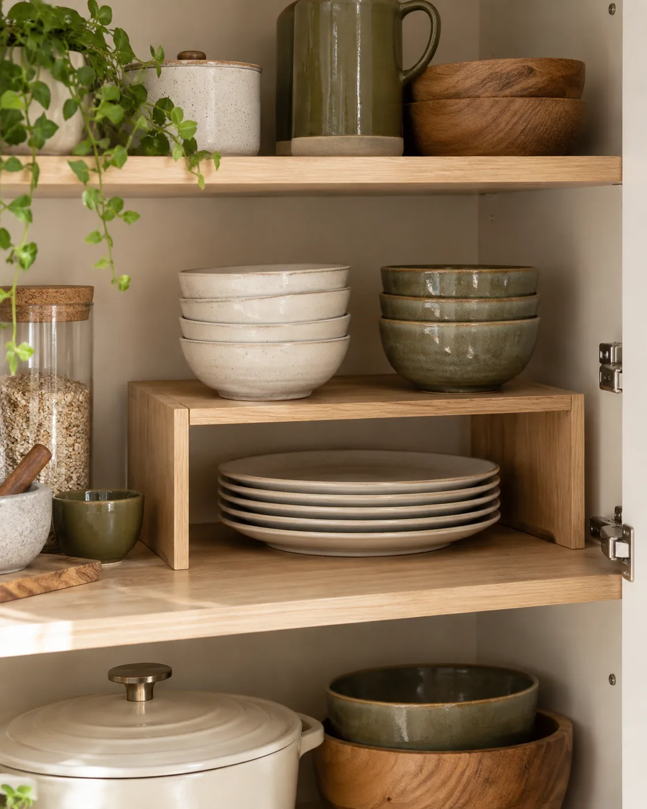

01
GO UP
Add a shelf riser
A shelf riser creates a second level inside a cabinet, making vertical space useful instead of leaving bowls, plates or pantry items stacked in one tall pile.
- Turns one cabinet level into two usable zones
- Makes everyday dishes easier to see
- Works especially well in tall cabinets
PRODUCT ANGLE
Expandable cabinet shelf organizers
Look for a width and depth that leave enough clearance for the cabinet door.
See options on Amazon →As an Amazon Associate I earn from qualifying purchases.